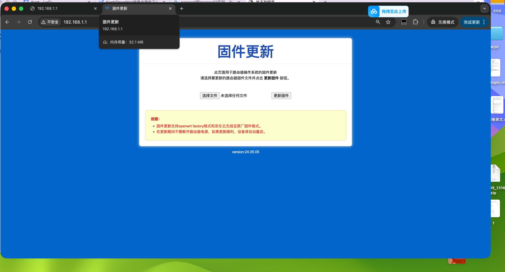
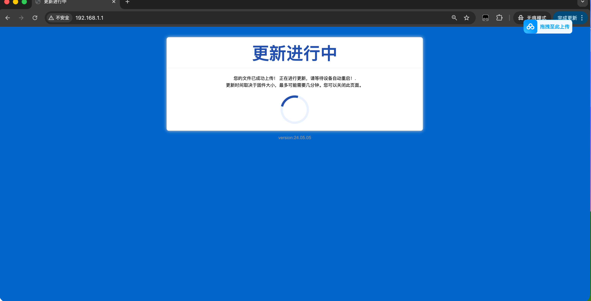
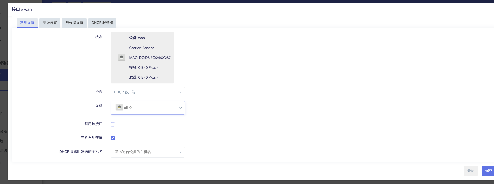
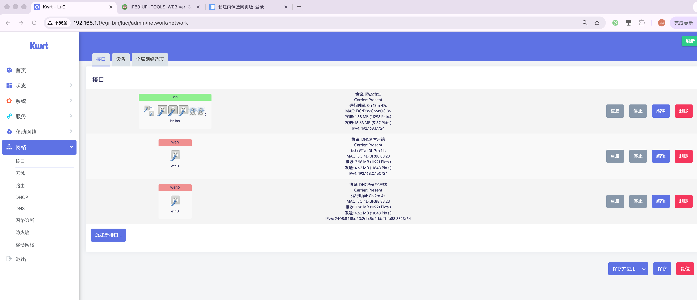
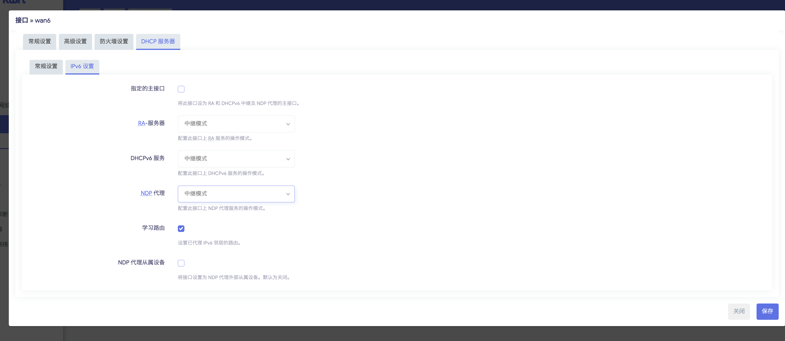
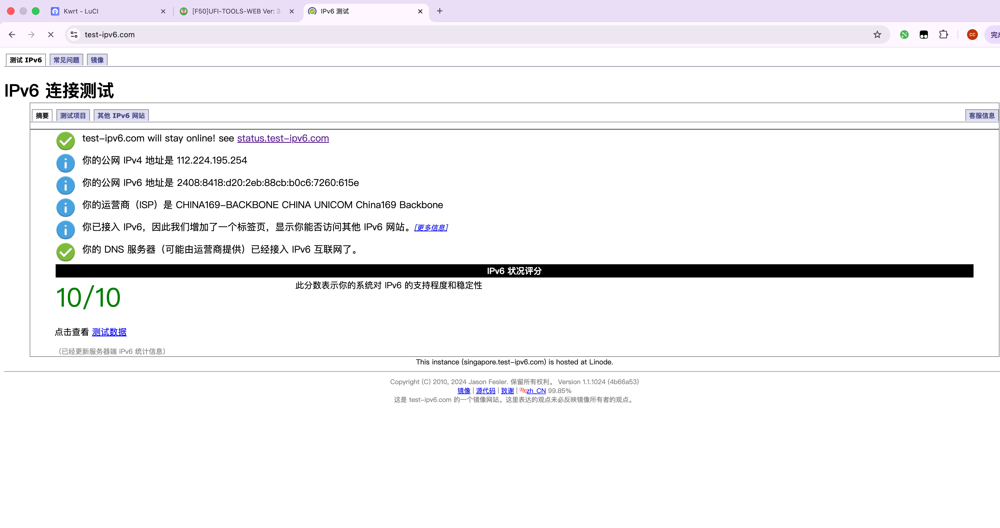

JDCLOUD AX1800Pro开启ipv6¶
- 本文章利用CPE设备
中兴F50进行实验
1. 进入uboot刷写提供的固件¶
- 本固件支持passwall，passwall2，openclass，kms，ddns功能


- 更新完成进入配置界面
- 默认密码 password
2.设置wan口¶
- 进入终端 查看是否识别到
F50设备，正确识别如图所有Device006
[root@Kwrt:02:15 PM ~] # lsusb
Bus 001 Device 001: ID 1d6b:0002 Linux 6.12.60 xhci-hcd xHCI Host Controller
Bus 001 Device 006: ID 19d2:1353 Unisoc F50
Bus 002 Device 001: ID 1d6b:0003 Linux 6.12.60 xhci-hcd xHCI Host Controller
[root@Kwrt:02:15 PM ~] #
-
设置wan
- 在网络的接口中，直接粗暴处理，修改wan口为插入的usb设备

- 这个时候设备就可以联网了
- 修改wan6

这个时候就会拿到ipv6地址，如果不可以请重启路由器
- 如图所示，但此时路由器是不具备中继ipv6的能力的

-
接下来开启中继的能力
- 设置wan6为中继模式

- 注意和图保持一模一样
- 接下来设置wan口，和wan6一样 但是要指定为主接口

- 最后一步保存并应用

3.检查设备是否支持ipv6¶

- 成功支持
4.问题环节¶
1.为什么要指定wan口为主接口¶
- 这是要是wan口即成wan6口给lan口的设备下发ipv6地址，和这一个原理相同
输入cat /etc/config/dhcp ，（ssh里粘贴怎么操作，复制命令，点击鼠标右粘贴，或者会自动粘贴，下面同样）查看到下图，在config dhcp 'wan'最下面加一行 option master '1'，如图所示，加的这一行命令跟 config odhcpd 'odhcpd'这行中间有回车，空一行，大家空格敲一下，只有配置了这一行，前面的ipv6中继能力才能生效。
2.怎么查看usb设备是哪一个网口¶
- 插拔usb设备，在bash中使用dmseg查看日志发现被注册为eth0
[ 209.080213] usb 1-1: USB disconnect, device number 3
[ 209.588278] usb 1-1: new high-speed USB device number 4 using xhci-hcd
[ 209.832916] cdc_ether 1-1:1.0 eth0: register 'cdc_ether' at usb-xhci-hcd.1.auto-1, ZTE CDC Ethernet Device, 5c:4d:bf:88:83:23
[ 221.187332] usb 1-1: USB disconnect, device number 4
[ 221.187515] cdc_ether 1-1:1.0 eth0: unregister 'cdc_ether' usb-xhci-hcd.1.auto-1, ZTE CDC Ethernet Device
[ 221.738320] usb 1-1: new high-speed USB device number 5 using xhci-hcd
[ 221.959653] cdc_ether 1-1:1.0 eth0: register 'cdc_ether' at usb-xhci-hcd.1.auto-1, ZTE CDC Ethernet Device, 5c:4d:bf:88:83:23
[ 222.222966] usb 1-1: USB disconnect, device number 5
[ 222.223117] cdc_ether 1-1:1.0 eth0: unregister 'cdc_ether' usb-xhci-hcd.1.auto-1, ZTE CDC Ethernet Device
[ 222.758314] usb 1-1: new high-speed USB device number 6 using xhci-hcd
[ 223.016554] cdc_ether 1-1:1.0 eth0: register 'cdc_ether' at usb-xhci-hcd.1.auto-1, ZTE CDC Ethernet Device, 5c:4d:bf:88:83:23